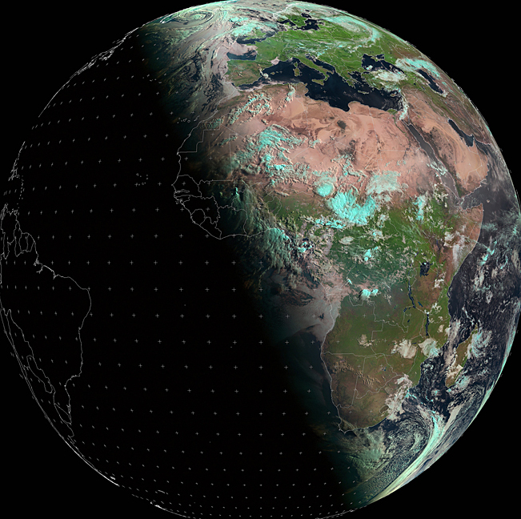

পূর্ব আকাশে শুক্র গ্রহের সর্বোচ্চ আরোহণ
০৪ জুন
 শুক্র গ্রহ একটি অভ্যন্তরীণ গ্রহ। কক্ষপথ পৃথিবী থেকে ভেতরের দিকে। বুধের মতোই তাই এটি পৃথিবীর আকাশের পুরোটা চক্কর খায় না। পশ্চিমে বা পূবে একটি সর্বোচ্চ উচ্চতা পর্যন্ত উঠে আবার নামতে থাকে। দোলকের মতো চলতে থাকে এ খেলা।
শুক্র গ্রহ একটি অভ্যন্তরীণ গ্রহ। কক্ষপথ পৃথিবী থেকে ভেতরের দিকে। বুধের মতোই তাই এটি পৃথিবীর আকাশের পুরোটা চক্কর খায় না। পশ্চিমে বা পূবে একটি সর্বোচ্চ উচ্চতা পর্যন্ত উঠে আবার নামতে থাকে। দোলকের মতো চলতে থাকে এ খেলা।
জিলহজ মাসের নতুন চাঁদ
১৯ জুন

অমাবস্যা পেরিয়ে আবার এলো নতুন চাঁদ। এ দিন চাঁদ ডুববে সন্ধ্যা ৮ টায়। ততক্ষণে চাঁদ শিকারিদের চোখে পড়বে আকাশ মেঘমুক্ত থাকলে।
উত্তরায়ন
২১ জুন
উত্তর গোলার্ধের সবচেয়ে বড় দিন। দক্ষিণ গোলার্ধে আবার উল্টো। এদিনের পর থেকে সূর্য আবার দক্ষিণ থেকে যেতে থাকে।
পূর্ণিমা
০৩ জুলাই

এ সময় পৃথিবী সূর্য ও চাঁদের মাঝে থাকে। সূর্যের আলো পৃথিবী থেকে দৃশ্যমান চাঁদের পুরো অংশকে আলোকিত করে। জুলাই মাসের পূর্ণিমাকে বাক মুনও বলে।